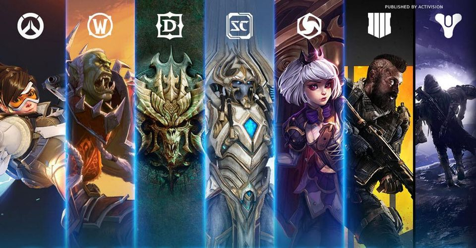

찰나를 울리는 영원의 메아리 - 삶의 방향성을 바꾸는 게임
================================================================================
- Show Yourself
- Karazhan Library
- Youtube Study
- Game Industry Trends
================================================================================

Game Industry Trends
[제노바첸#1] '밸브'도 인디 개발사일까? (저니 개발자가 말하는 인디의 정의)
지난 10년 간을 한 번 생각해 보세요.
어떤 게임들이 진정으로 유니크했고, 독립적이었고, 위험을 무릅썼으며
어떤 게임들이 인디게임 영화에 소개될 만 했는지
그들은 대체로 재정적 위험을 가지고 있었습니다.
인디가 무엇이냐고 물을 때, 바로 그런 것들이 제가 찾는 것입니다.
지난 몇 년간 사람들이 말해온 인디 스타는
그들은 정말로 믿지만, 아무도 믿지 않았던 것들을 시도한 사람들입니다.
그리고 그 게임들은 성공적이었어요.
그런 게 바로 우리가 듣고 싶어하는 스토리죠.
그런 이야기엔 어떤 낭만 같은 게 있어요.
그래서 전 말해왔죠.
내 마음 속 인디는 해적선이다.
룰을 따르지 않고 보물을 찾는 그런 해적선이요.
바다는 열려있고, 위험하고, 그들 중 많은 사람이 죽겠지만,
때때로 어느 해적은 보물을 찾고
다른 해적들이 속도를 내 계속 달리게 하죠.
그게 바로 인디 정신이에요.
최소한 제가 생각하는 인디란 그런 것이에요.
저는 해적선을 보고 싶어요.
모두가 바다에 둥둥 떠 있는 모습은 보고 싶지 않아요.
- 제노바 첸(저니, 스카이, 플라워 등을 개발한 댓게임컴퍼니의 대표이자 크리에이티브 디렉터)
[제노바첸#2] 게임 중독이 질병? 그들은 새로운 것이 등장할 때마다 늘 이래왔다
위쳐는 어떻게 폴란드라는 나라를 구해냈나? 게임을 부정하던 정부를 바꾼 RPG의 교과서
리니지2M 출시에 만반의 준비했다는 블루스택, 뭐가 달라졌을까?
한국 모바일 게임이 돈을 많이 버는 이유
뇌파를 이용하여 플레이하는 게임
================================================================================
- Show Yourself
- Karazhan Library
- Youtube Study
- Game Industry Trends
================================================================================